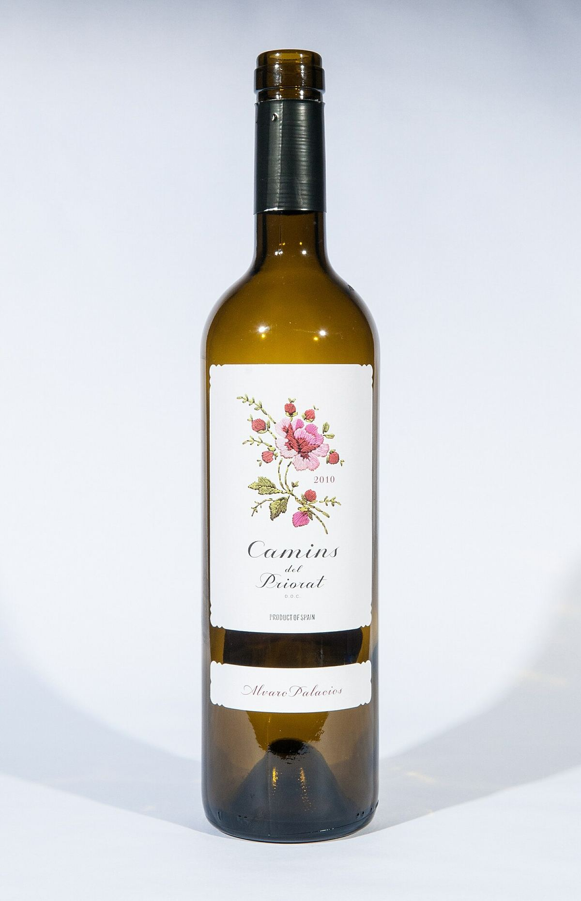

TINTO
Priorat, en la provincia de Tarragona, es una de las dos Denominaciones de Origen Calificadas de España, junto a Rioja. Sus tintos de Garnacha y Cariñena, cultivadas en laderas de pizarra llamada llicorella, se caracterizan por su concentración y su carácter mineral.

El nombre de Priorat procede del priorato de la cartuja de Scala Dei, fundada a finales del siglo XII al pie de la sierra del Montsant. Los monjes cartujos impulsaron el cultivo de la vid en la comarca durante siglos. A finales del siglo XIX la filoxera arrasó el viñedo y provocó una fuerte emigración, y durante buena parte del siglo XX la producción se limitó a vinos a granel, en gran parte elaborados por cooperativas. A finales de la década de 1980 un pequeño grupo de elaboradores, entre ellos René Barbier, Álvaro Palacios, Carles Pastrana, Josep Lluís Pérez y Daphne Glorian, se instaló en torno a Gratallops y comenzó a elaborar tintos de gran concentración que dieron a la región fama internacional. En 2000 la Generalitat de Cataluña le otorgó la categoría de Denominación de Origen Calificada (DOQ en catalán), reconocida en el ámbito estatal en 2009.
El Priorat es una comarca montañosa del interior de Tarragona, protegida al norte por la sierra del Montsant. Los viñedos se cultivan en laderas a menudo muy empinadas, en bancales o directamente en pendiente, con orientaciones y altitudes muy variadas. El clima es mediterráneo con rasgos continentales: veranos calurosos y secos, inviernos frescos, lluvias escasas y notable diferencia de temperatura entre el día y la noche.
El suelo más característico es la llicorella, una pizarra oscura que se fragmenta en láminas y contiene partículas de mica que brillan al sol. Es un suelo pobre en materia orgánica, que obliga a las raíces a profundizar en busca de agua y limita mucho los rendimientos.
Las variedades tradicionales son la Garnacha y la Cariñena, a menudo procedentes de viñas viejas en vaso. Desde finales del siglo XX se cultivan también Cabernet Sauvignon, Merlot y Syrah, empleadas sobre todo en coupage. Entre las blancas destacan la Garnacha Blanca y la Macabeo. Los tintos del Priorat se caracterizan por su color profundo, su fruta madura, su estructura y un carácter que suele describirse como mineral. Se elaboran también blancos, algunos rosados y, de forma tradicional, vinos rancios y dulces.
El Priorat ha desarrollado una clasificación basada en el origen. Los vins de vila proceden de una de las doce zonas reconocidas, que corresponden a pueblos o áreas como Gratallops, Porrera, Torroja del Priorat, Bellmunt del Priorat, Poboleda o Escaladei. Por encima se sitúan los vins de paratge, de parajes concretos, y las categorías de viñedo clasificado y gran viñedo clasificado, reservadas a parcelas con características singulares.


